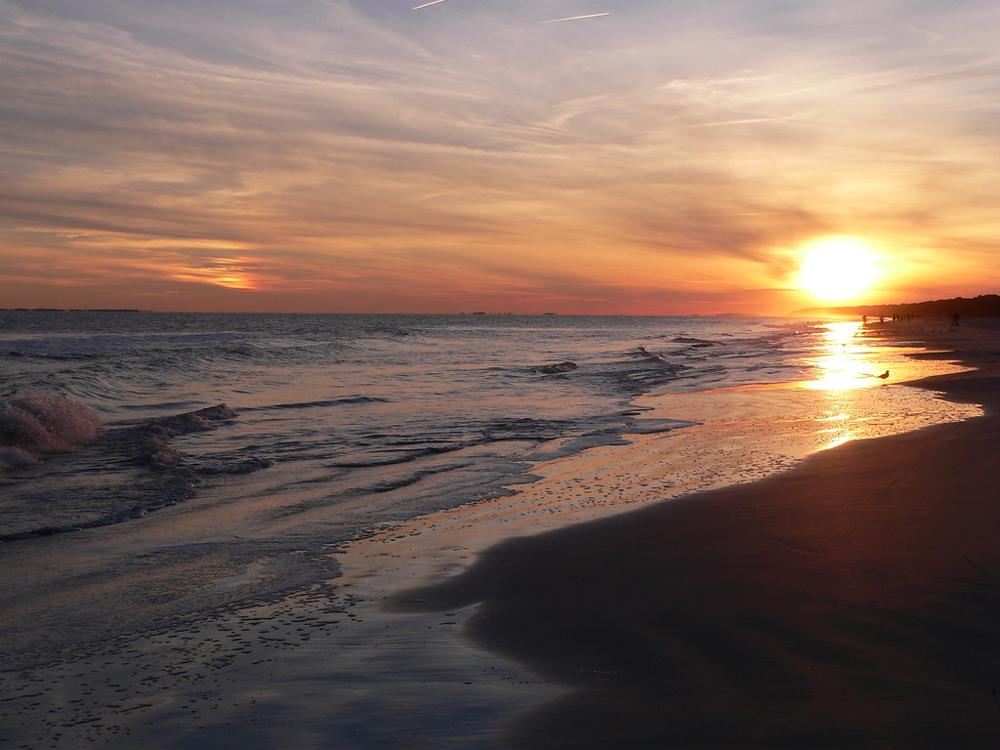

Hilton Head is a small island located in South Carolina, not far from the border of Savannah, Georgia. Known for its beautiful beaches, exquisite golf courses, and numerous shops and restaurants, it's no wonder this place is a popular tourist destination.
